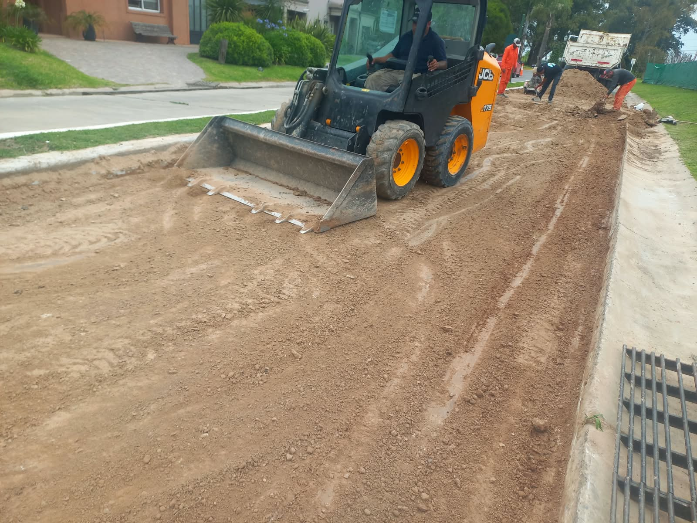

Limpieza de terrenos
Preparación y limpieza del terreno antes de comenzar un nuevo proyecto.

Limpieza de terrenos, armado de plateas y calles, y pozos para piletas. Conocé nuestro trabajo y contanos qué necesitás hacer.
Imágenes reales de trabajos de Movimiento de Suelo Dorrego. Tocá una foto para verla mejor.
Trabajos de movimiento de suelo para preparar el terreno y avanzar con la siguiente etapa.
Preparación y limpieza del terreno antes de comenzar un nuevo proyecto.
Movimiento de suelo para dar forma a plateas y calles.
Excavaciones y preparación del espacio para construir una pileta.
Escribinos por WhatsApp para consultar sobre limpieza de terrenos, plateas, calles o pozos para piletas.
Consultar por WhatsApp